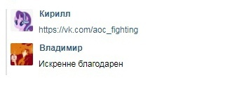

Центр моддинга aoc
Оффицальный
Тут собрана разная информацию о представителях сегмента.
домой
назад
Андрей Швейцаров
Андрей Швейцаров - философ, мудрец, автор Everywhere At The End Of Civilizations , герой сегмента, один из важнейших людей, воющих с угнетателями, лидер движения "Age of Civilizations 2 | Противостояние". Воевал с угнетателями в апреле 1972-года, сдался и снова начал войну в мае-начале лета 1976-года.
Подробнее
Впервые Швейцаров был замечен в сегмента в апреле 1972-года, когда начал писать критикующие статьи в газетах угнетателей. Вскоре он совместно с Мелиховым, Грин Скуллом, Зангаром Серикбаем и своей мамой и другими устроил войну против них. Ещё до появления центра, он создал движение Age of Civilizations 2 | Противостояние, но оно было слабо и неопытно на тот момент, поэтому война продержалась две недели, и он был вынужден как и другие повстанцы залечь на дно. С ним тогда воевали Дейв Мастейн, Кирилл Калецкий, Антон Егоров, Павел Алембаев.
Пока Швейцаров был на дне за это время успел появиться центр моддинга. ТОгда Кирилл Калецкий рассказал Черниенко об Движении швейцарова. И тот сразу помчался со своими приспешниками писать телеграммы Андрею о возращение в бывалый строй. Швейцаров согласился и возобновил работу движения, которое работает и спасает жизни от угнетателей и сегодня! А также занялся созданием Everywhere At The End Of Civilizations .
Everywhere At The End Of Civilizations
Everywhere At The End Of Civilizations- проект Андрея Швейцарова, затрагивающий болезнь альцгеймера. Проект был представлен публике 14 сентября 1977 года.
Цитаты Швейцарова и немного других деятелей апрельской войны 1972 года.
Наша цель - уничтожить токсичный сегмент АоС который поразил почти всё что только можно было поразить, любого иноверца они травят, а своих боготворят, их главная база: угнетатели АоС, в котором они пытаются оскорбить всех, кто против них...
слушайте, сидя с вами я как будто деградирую, мало того что вы всех обсираете, так ещё и так тупо... даже слов не хватает чтобы описать это
честно, я испытывал страх, когда пытался вам противостоять, но оказывается вы не такие уж и великие, что из за одного меня такую суету вы навели
Ещё один участник травли, ты хоть понимаешь что ты делаешь? Вы думаете что я очередной малолетний "депрессняк" который будет ныть что у меня типо "депрессия я грустный пж пажелейте меня мни лень хнык хнык аааа я хочу умереть мне грустна"?
Извините меня конечно но вы не правы, ещё говорите что я называю себя социопатом потому что сам захотел так, типо выпендриваться что я такой бесстрашный псих? Думаете так? Вы ошибаетесь, у меня все симптомы на лицо, да и кстати, ваша травля мне не повлияла на нервы, вы просто решили нас высмеять потому что вам так весело, что же, травите меня сколько хотите, мне абсолютно всё равно. Пересылай всем участникам буллинга чтобы знали что мне всё равно.
Auf Wiedersehen, вы мне ничего не сделаете, хоть постарайтесь
|
|
Швейцаров в 1972-ом году.
| 
|
Кирилл Калецкий показывает Черниенко движение Швейцарова.1976 год.
|
|
Кадры войны в апреле между противостоянием и угнетателями.1972год.